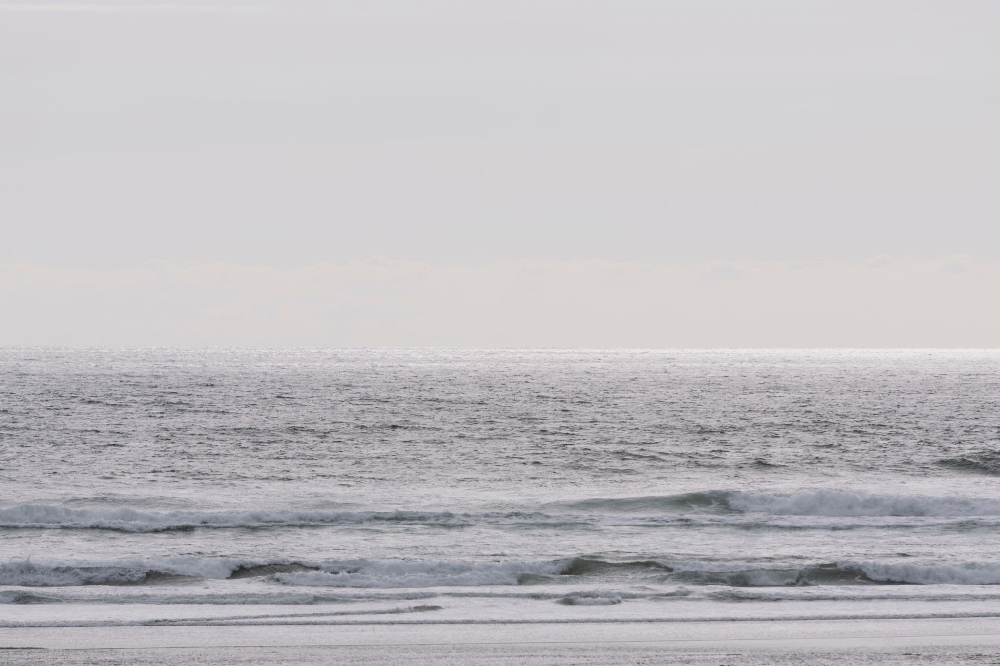

平静的海
问：电影中拍摄冷色调带有灰白感海面全景 景中没有海岸和其他元素 浪普通，这种画面要传达的信息是什么

AI答：
这种画面在电影视听语言中属于典型的“极简空间空镜”。去掉海岸线、船只、飞鸟或人物，只留下冷灰白色的海面与平缓起伏的浪花，本质上是在剥离叙事锚点，把银幕变成一块情绪与时间承载体。
一、 空间与尺度的剥离：无参照系带来的“悬置感”
* 失去方位与归宿：画面中没有海岸线（意味着没有“陆地/出发点/避风港”的参照），也没有任何人工或生物元素。观众在视觉上无法建立尺度感，也找不到视线落点，容易产生一种悬浮、漂流、无处可依的生理与心理感受。
* 去戏剧化处理：狂风巨浪往往指向外部冲突、命运转折或剧烈情绪；而“浪普通”意味着表面没有激烈对抗。这种克制把焦点从“发生了什么事”转向“事情发生之后或之前，人处于怎样的状态”。
二、 色调与质感的指向：冷灰白里的克制、疏离与余波
* 冷色调与灰白感：低饱和度的灰白与冷色削弱了浪漫化的蔚蓝想象，带有一种抽离感、倦怠感、冷峻或未竟的寒意。它既不像明亮海景那样具有治愈或开阔的舒展感，也不像暗黑风暴那样充满压迫感，而是一种近乎“麻木、平静、悬而未决”的中性冷感。
* 时间的停滞与延续：海浪一直在动，但幅度普通、缺乏高潮，这在电影中常用来表达时间的钝感——漫长的等待、事态尘埃落定后的空寂、人物内心的钝痛，或者一段关系/命运悄然滑向未知之前的静默。
三、 结合剪辑位置，它通常承担的功能
这种镜头单独看是“空”的，但在整部电影的结构里，它的具体含义高度依赖上下文位置：
* 作为段落转场或“呼吸镜头”：在激烈争吵、重大变故或高密度信息之后插入，让观众的情绪降温、沉淀，把叙事重心从事件转移到余韵。
* 作为人物心境的外化：当角色陷入孤独、迷茫、沉默或情绪抽离时，无边无际的灰白海面往往充当心理投影，替代台词表达“说不出口”或“无处可去”。
* 作为叙事留白或悬念铺垫：看似风平浪静、毫无异物，却因为过于空旷而显得有些“不对劲”或“过于安静”，为后续转折留出心理空间。
四、 如何进一步精准判断它的意图？
由于空镜的语义高度依赖前后文，判断它究竟在讲什么，通常看三个线索就够了：
* 前一个镜头是什么：是刚经历冲突、离别、秘密曝光，还是平淡日常的延续？
* 声音设计如何处理：是只有单调的海浪声、风声，还是叠加了环境音、音乐或人物画外音？声音往往决定这片灰白海面是“冷清”还是“暗涌”。
* 镜头是否运动与时长：是静止固定机位长时间停留（强调凝视与时间流逝），还是缓慢推拉/摇镜？
你是在哪部片子或哪类片段里看到这个镜头的？如果有前后的剧情或声音细节，我们可以顺着具体语境再往下拆。